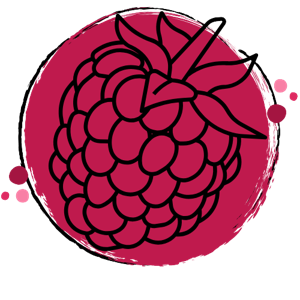
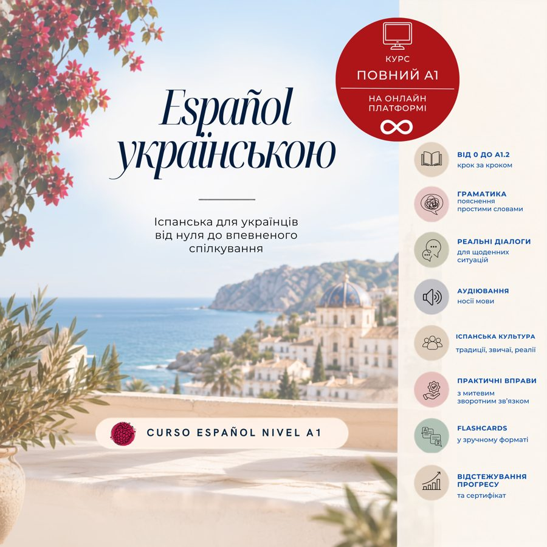
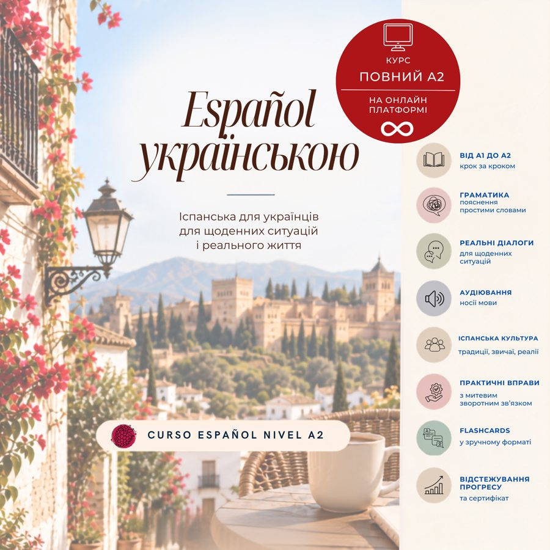
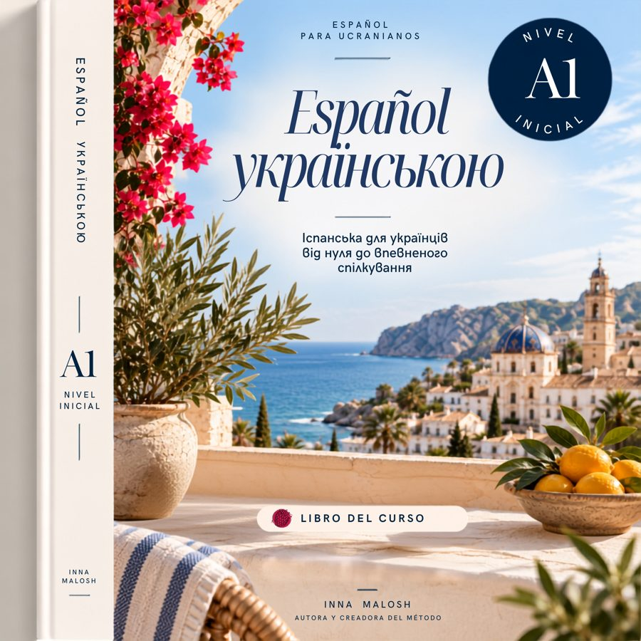
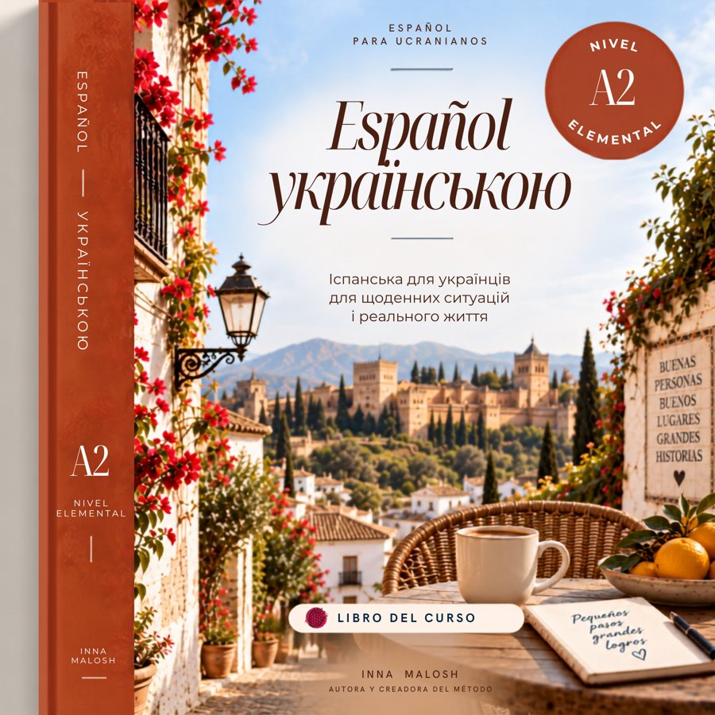
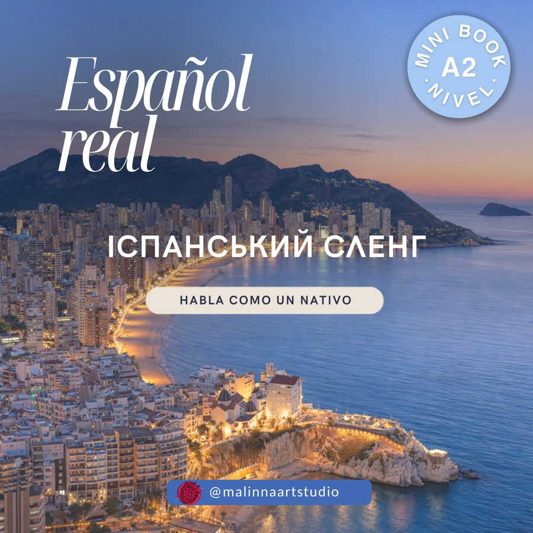
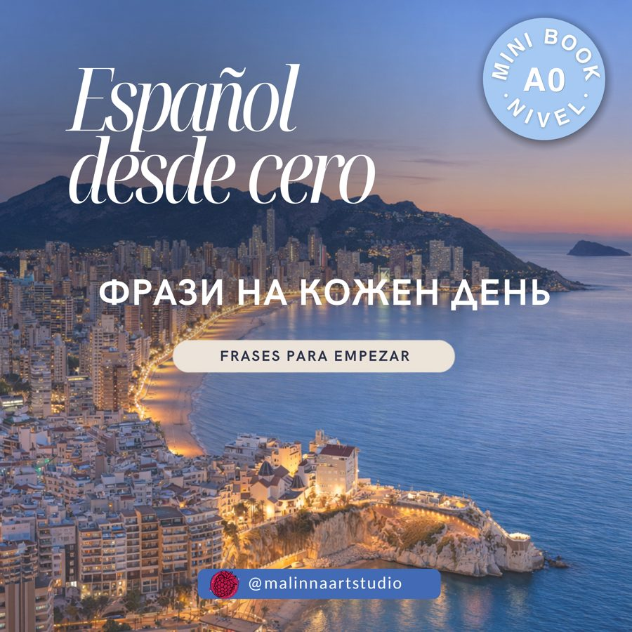
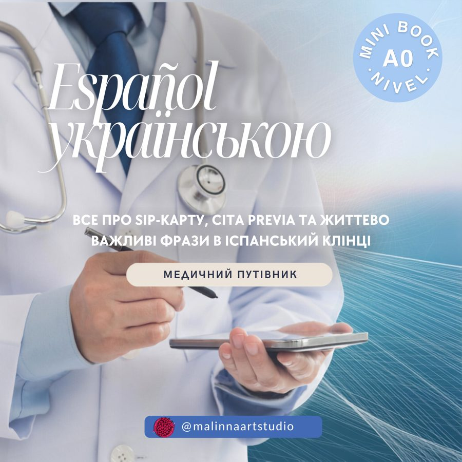
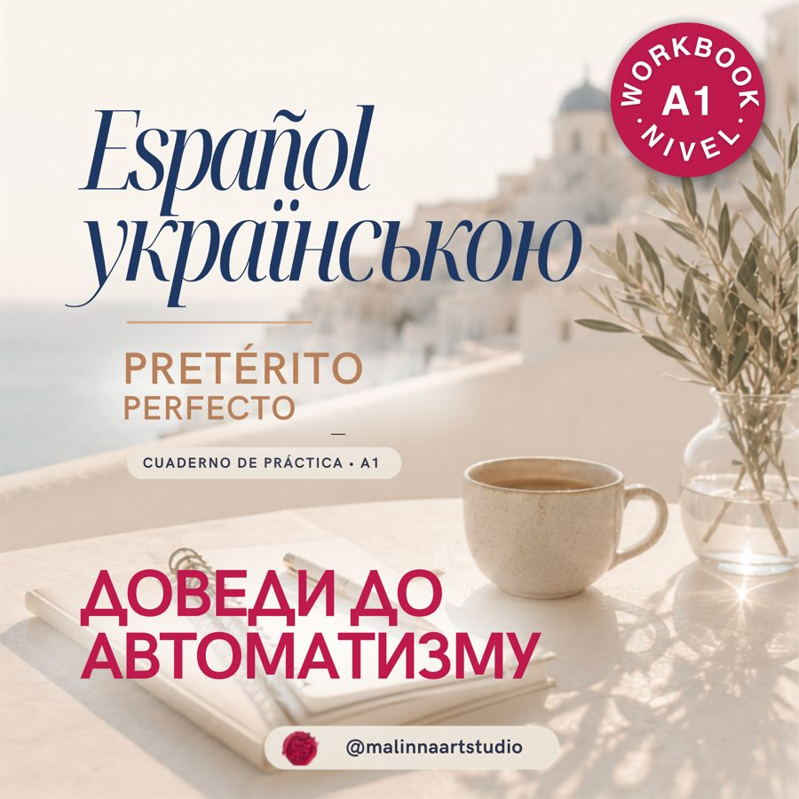
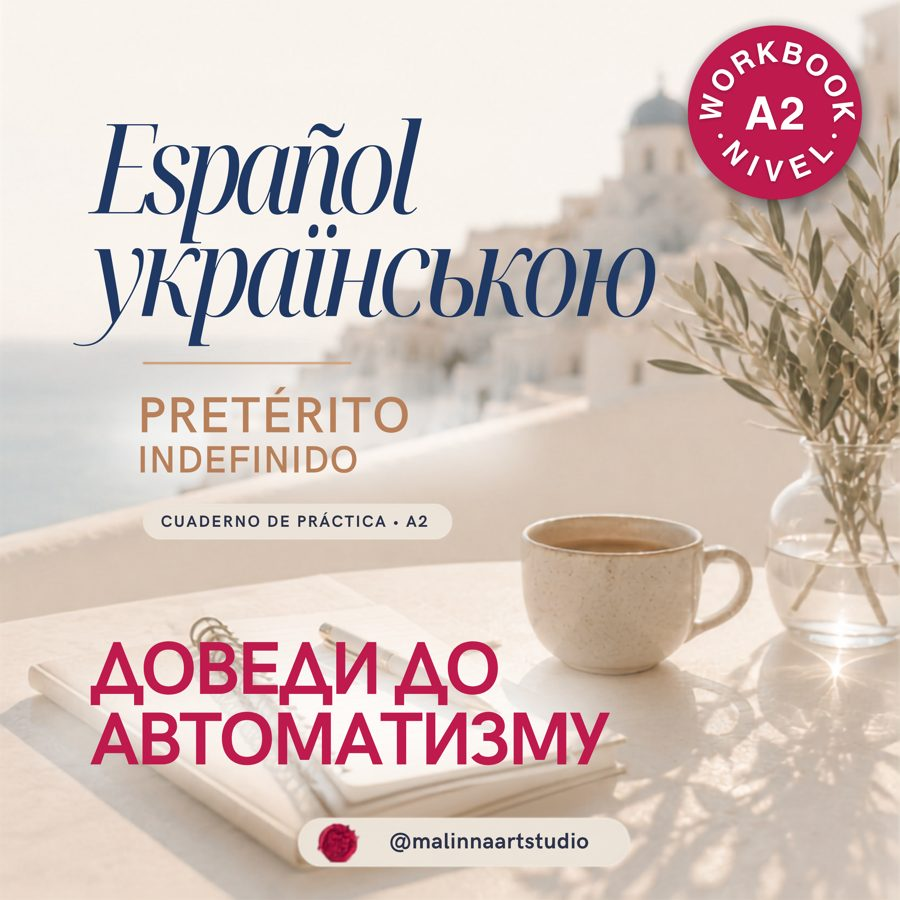

Навчання з системою
Онлайн-курси
Від старту з нуля до впевненого спілкування: уроки, практика, аудіо й ваш прогрес.
Переглянути курси →
Español українськоюОнлайн-курси, підручники й воркбуки, з якими мова стає частиною вашого життя — від першого «hola» до впевнених розмов.
Обирайте свій шлях
Почніть з того формату, який відповідає вашій меті, графіку та рівню. Усі матеріали створені спеціально для україномовних студентів.
Навчання з системою
Від старту з нуля до впевненого спілкування: уроки, практика, аудіо й ваш прогрес.
Переглянути курси →Ваші надійні опори
Структуровані матеріали для послідовного навчання — зрозуміло, без перевантаження.
Переглянути підручники →Практика щодня
Точкові тренажери з граматики, які допоможуть розкласти складне по поличках.
Переглянути воркбуки →Каталог
Натисніть на категорію, щоб знайти те, що потрібно саме зараз.

Онлайн-курс · A1
30 уроків, живі діалоги, аудіювання та практика у вашому темпі.
Відкрити на Kwiga →
Онлайн-курс · A2
30 уроків для впевнених розмов у житті, роботі та повсякденних ситуаціях.
Відкрити на Kwiga →
Підручник · A1
Перші слова, правила й ситуації для упевненого старту в іспанській.

Підручник · A2
Системна практика для тих, хто хоче говорити вільніше й точніше.

Тематичний матеріал
Іспанська, якою справді говорять: сучасні слова, фрази та реальні контексти.

Міні-підручник · A0
Фрази на кожен день для тих, хто починає іспанську з нуля.

Тематичний матеріал
Словник і фрази для важливих ситуацій, пов’язаних зі здоров’ям в Іспанії.
Воркбук
Воркбук

Воркбук

Воркбук
Воркбук
Воркбук
Воркбук
Воркбук
Три формати підтримки
30 уроків рівня A1 або A2 — від самостійного навчання до персональних занять із викладачем.
Самостійно
150 €
5 € / урок
Доступ до всіх 30 уроків назавжди, автоперевірка вправ і завдань — у зручний час та у своєму темпі.
Найбільше підтримки
З куратором
300 €
10 € / урок
Усе з базового тарифу + живий зворотний зв’язок: завдання перевіряються вручну, з коментарями до помилок.
Індивідуальні уроки
450 €
15 € / година
Максимальна увага: індивідуальні заняття з викладачем, розбір ваших помилок, навчання, адаптоване саме під вас.
+ 2 міні-курси на 15 € у подарунок
Español Salud і Español Real: Jerga — медична лексика та жива розмовна іспанська. Окремо на Etsy коштують 14,98 €, у платних тарифах — безкоштовно.
Зручна оплата
Оплачуйте одразу або розділіть суму на 3 платежі через PayPal.
Методика курсу
Курс побудований за комунікативно-граматичним принципом: кожен урок веде від реальної ситуації до правила, а від правила – до самостійного мовлення. Іспанська пояснюється українською, з опорою на логіку рідної мови, тому ви розумієте не лише «як», а й «чому». Програма відповідає рівням A1–A2 за європейською шкалою CEFR і стандартній програмі офіційних мовних шкіл Іспанії, а всі тексти, діалоги та вправи — авторські.
Як побудований кожен урок
Граматика з поясненнями українською, словник уроку, текст із аудіо від носія мови, культурні нотатки про життя в Іспанії та розбір найпоширеніших помилок.
Окремий блок на розуміння живої іспанської на слух – щоб звикнути до реального темпу й вимови ще до того, як опинитеся в розмові.
Набір карток на Quizlet зі словником уроку – повторюйте слова з телефону в будь-який вільний момент, доки вони не стануть автоматичними.
Інтерактивний тренажер з автоматичною перевіркою і трьома рівнями складності (★ / ★★ / ★★★) – доводить правило до впевненого використання.
Письмові завдання на застосування матеріалу. У тарифах із підтримкою їх перевіряє куратор і дає персональні рекомендації.
Чіткий підсумок того, що ви вже вмієте сказати і зробити іспанською після цього уроку – прогрес видно щоразу.
Відео- або аудіозавдання, у якому ви говорите самі: мова переходить із вправ у власне мовлення.
Зріз закріплення уроку – показує, що засвоєно, а до чого варто повернутися перед наступною темою.
Хочете побачити все на власні очі? Відкритий урок 20 «Cuerpo humano y salud» ↗
Ваш наступний крок
Напишіть мені — допоможу обрати рівень, формат навчання та тариф із потрібною підтримкою.
Оберіть зручний спосіб зв’язку
Telegram@innamalosh→ Instagram@malinnaartstudio→ Emailmalinnaartstudio@gmail.com→ Телефон+34 611 258 692→ Записатися на урок → Усі посилання →